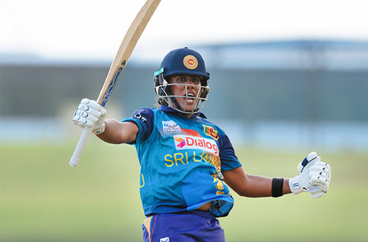

WOMEN'S ASIA CUP T20, 2024
by Sports Sphere • Published on Mon, Jul 22, 2024, 05:58 PM
The captain carried her bat through the innings, slamming 7 sixes and
14 boundaries en route to her third T20I ton © SLC
Chamari Athapaththu's career-best 119* helped Sri Lanka thump Malaysia
by a whopping 144 runs in their Women's Asia Cup encounter at Dambulla on
Monday. The captain carried her bat through the innings, slamming 7 sixes
and 14 boundaries en route to her third T20I ton, and first at home, to
power Sri Lanka's highest total in the format - 184/4. Malaysia stuttered
right from the start, and could muster only 40 in the reply.
Malaysia's left-arm pacer Suabika Manivannan struck with her first ball to
remove Sri Lanka's half-centurion from the previous game, but there was no
stopping Athapaththu. The captain took charge and combined with Harshitha
Samarawickrama to forge a 64-run partnership. The pair ensured they had
a boundary coming every over before the skipper went on the offensive
against Aisya Eleesa, hitting three boundaries to make a very productive
14-run final PP over before the fielding restrictions were lifted.
Their inexperience showed as there were plenty of errors in Malaysia's lines
and lengths and Athapaththu did not spare any single loose delivery. Anything
short, wide or overpitched was duly dispatched. Athapaththu truly only flicked
the switch after the half-way mark, and clobbered back-to-back sixes off her
counterpart to raise a 35-ball half-century. From a team fifty in the seventh
over, the home team's hundred was up in the 12th and Malaysia had no answers.
But this was only the beginning of the assault. The momentary relief in this
phase was when Mahirah Izzati Ismail yorked Samarawickrama for her 50th T0I
wicket in her 50th match.
In the slog overs, Athapaththu was just toying with the attack and fetched sixes
for fun. It didn't help Malaysia's cause either that they were shoddy in the
field. After a lucky boundary off Ainna Hamizah Hashim, the Sri Lankan skipper
hacked two sixes - one onto the sightscreen and next pulled midwicket - to
march into 90s. Eleesa was at the receiving end of two straight sixes to long-on
in the next over as Athapaththu reached her hundred in style, off just 63 balls.
Duraisingam too leaked one in the final over as the Sri Lanka skipper took her
team past their previous best T20I total of 182. However, wickets off final-two
balls prevented further damage for Malaysia.